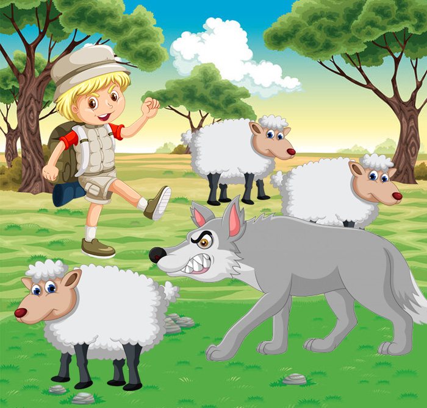

เด็กเลี้ยงแกะ ดูแลฝูงแกะอยู่ใกล้ป่าทึบไม่ไกลจากหมู่บ้านนัก ไม่นานเขาก็พบว่าชีวิตในทุ่งเลี้ยงสัตว์นั้นช่างน่า
เบื่อหน่ายเหลือทน ความบันเทิงเท่าที่ทำได้มีเพียงคุยกับเจ้าหมาและเป่านกหวีดเลี้ยงแกะของเขาไปเรื่อยเปื่อย
วันหนึ่งขณะที่เขานั่งมองแกะและผืนป่าอันเงียบสงบ พร้อมทั้งครุ่นคิดว่าจะทำอย่างไรดีหากเจอหมาป่า เขา
พลันคิดถึงแผนการที่จะสร้างความสนุกสนานให้ตัวเองได้แผนการหนึ่ง
เจ้านายของเขาเคยบอกให้เขาร้องให้ช่วยหากหมาป่าจู่โจมฝูงแกะ แล้วพวกชาวบ้านก็จะขับไล่มันไป ดังนั้น
แม้ว่าตอนนี้เขายังไม่เห็นอะไรที่คล้ายหมาป่าสักตัวโผล่มา เขากลับวิ่งเข้าไปในหมู่บ้านและร้องตะโกนสุดดเสียง"หมาป่า! หมาป่า!"
เป็นดังคาดเมื่อพวกชาวบ้านได้ยินเสียงตะโกนก็ทิ้งงานของตนและวิ่งแจ้นไปยังท้องทุ่งด้วยความตื่นตกใจใหญ่หลวง แต่เมื่อพวกเขาไปถึงที่นั่นก็พบเพียงเด็กชายนั่งหัวร่อตัวงออยู่กับมุกตลกที่เขากลั่นแกล้งชาวบ้าน
ไม่กี่วันถัดมา เด็กเลี้ยงแกะก็เขามาในหมู่บ้านและร้องตะโกนอีก "หมาป่า! หมาป่า!" เข่นเคย พวกชาวบ้านวิ่งไปช่วยเหลือเขา เพียงเพื่อถูกเด็กชายหัวเราะเยาะอีกครั้ง
กระทั่งตกเย็นวันหนึ่ง ขณะที่ดวงตะวันลาลับขอบฟ้าบริเวณชายป่า ก็มีเงามืดคืบคลานเข้ามาในทุ่งเลี้ยงสัตว์ หมาป่าตัวจริงกระโจนออกจากพุ่มไม้ตรงรี่เข้าขย้ำคอแกะ
เด็กชายวิ่งตรงไปยังหมู่บ้านพร้อมตะโกนก้องด้วยความหวาดหวั่น "หมาป่า! หมาป่า!" แต่คราวนี้แม้ชาวบ้านจะได้ยินเสียงร้อง พวกเขากลับนิ่งเฉยไม่ยอมวิ่งไปช่วยเหลือเช่นทุกคราว "เขาหลอกเราไม่ได้อีกแล้วละ" พวกชาวบ้านเอ่ย
หมาป่าสังหารแกะของเด็กชายไปมากมาย ก่อนจะเร้นกายหายเข้าไปในป่า
:: นิทานเรื่องนี้สอนให้รู้ว่า ::
ไม่มีใครเชื่อถือคนโกหกในยามที่เขาพูดความจริง
:: จัดทำโดย ::
ด.ช.ร่มฉัตร เสมใจดี ม.2/2 เลขที่ 16
ด.ญ.พิมพ์ณดา พัฒนพรพิทักษ์ ม.2/2 เลขที่ 23